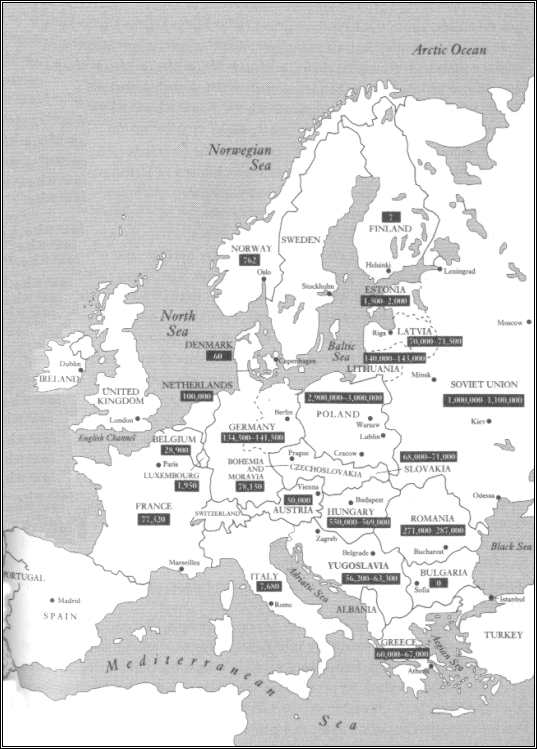

Pictures from our recent events and outreach
W krajobrazie obecnego bialskopodlaskiego województwa po żydowskich jego mieszkańcach pozostało niewiele. Domy modlitw i synagogi doszczętnie zniszczono podczas okupacji hitlerowskiej. Układ urbanistyczny miast z charakterystycznymi elementami zabudowy zmienił swoje przeznaczenie. Nawet najbardziej trwały ślad obecności ludności żydowskiej jakim jest cmentarz zdewastowany został w okresie wojny przez niemieckich okupantów. W niektórych bialskopodlaskich miejscowościach jak np. Konstantynów, Łomazy, Terespol i Wisznice po żydowskich kirkutach pozostały tylko puste przestrzenie, a o ich pierwotnym przeznaczeniu wiedzą jedynie najstarsi mieszkańcy. W innych miastach województwa min. w Janowie Podlaskim, Łosicach, Piszczacu, Radzyniu Podlaskim i Sławatyczach odnaleziono po latach szczątki kamiennych tablic z inskrypcjami w języku hebrajskim, ostatnich świadków przeszłości. Na terenie cmentarza żydowskiego w Białej Podlaskiej po II wojnie światowej zbudowano pomnik upamiętniający martyrologię ludności żydowskiej. Kilka lat temu bialski kirkut został ogrodzony metalowym płotem a pomnik odnowiono, nie przypomina on jednak katolickich cmentarzy. Jedynie kirkut w Międzyrzecu Podlaskim najpełniej zachował charakter nekropolii, mimo iż większość macew wbudowano w mur cmentarny, dając wyobrażenie o jego pierwotnym kształcie. Mieszkańcy niektórych miast bialskopodlaskich zachowali dla potomnych nazwy, związane z ludnością żydowską. W Białej Podlaskiej są to min. uliczka i plac zwane Szkolny Dwór, plac Rubina i koszary Piżyca, a w Międzyrzecu Podlaskim byłą dzielnicę żydowską po dziś dzień nazywają Szlumowizna, choć żaden Żyd już tam nie mieszka. To co pozostało jest cennym świadectwem kultury, obyczajów, języka żydowskiego, dając wystarczający dowód na to, że ludność żydowską w naszym kraju łączyła z Polakami wspólna historia.
W okrutnych i tragicznych latach II wojny światowej oraz okupacji hitlerowskiej ludność żydowska nie posiadała żadnych praw a hitlerowskie rządy terroru i bezprawia doprowadziły do masowej jej zagłady. Dokładna liczba zamordowanych Żydów nie została nigdy ustalona, szacuje się jednak, że w latach II wojny światowej życie straciło 5-

Przybliżona liczba Żydów zabitych w okresie Holocaustu.[3]
Wszystkich zbrodni dokonanych przez hitlerowski terror nie sposób przedstawić a wszystkich szkód nie sposób zliczyć. Liczba jest tak ogromna a zbieranie materiałów dotyczących tego przerażającego okresu trwa nadal. Nie mniej jednak na podstawie mapy można stwierdzić, że największa liczba Żydów zginęła na terytorium Polski a więc w każdym polskim mieście i wsi każdego dnia ginęło przynajmniej kilku a być może kilkudziesięciu Żydów. Na terytorium województwa bialskopodlaskiego zginęło około 13,954 Żydów jak ustaliłam w zakończeniu trzeciego rozdziału. W każdym podrozdziale do tego rozdziału starałam się dokładnie przestawić formy i sposoby w jakich ginęli Żydzi, a także ilu ich ginęło i w jakich okolicznościach. Rozdział drugi poświęcony był głównie Niemcom ich polityce, organizacji wielkiego aparatu terroru i zbrodni, który stał się sprawcą krzywd doznanych przez naród żydowski. Natomiast rozdział pierwszy dowodził niezbicie, że Polacy nie byli jedynymi mieszkańcami obecnego terytorium województwa bialskopodlaskiego. Wskazując we wstępie na chęć poznawczą dodam, że praca niniejsza przyczyniła się do zapełnienia istniejących luk mojej wiedzy na temat zagłady żydowskich mieszkańców Podlasia.
Pisząc pracę dotyczącą holocaustu długo zastanawiałam się nad tym czy aby nie jest to temat przebrzmiały, stary, poznany od początku do końca i niejako odfajkowany. Dla wszystkich stało się jasne, że strasznych zbrodni dokonanych na narodzie żydowskim dopuścili się Niemcy -
[1] B. Bankowicz, M. Bankowicz, A. Dudek, Leksykon historyczny…, op. cit., s. 218
[2] Ibid.
[3] D.J. Goldhagen, Hitler’s Willing Executioners…, op. cit., s. 413.
Zakończenie